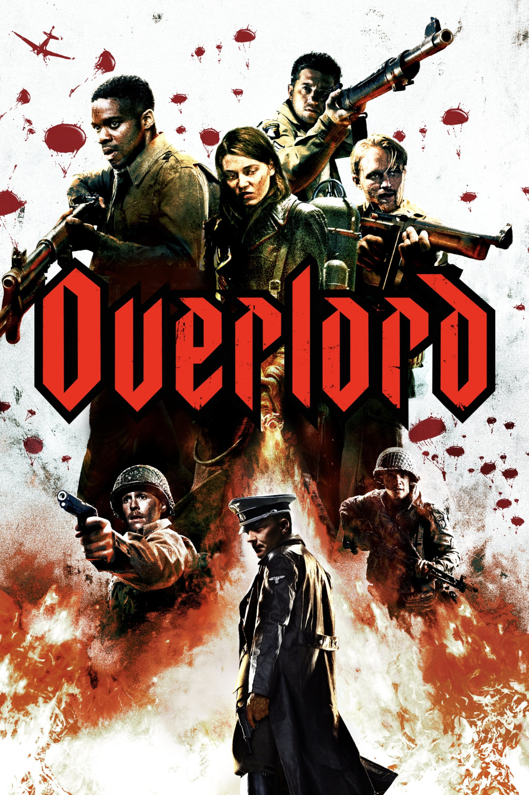

Мировая премьера: 9 ноября 2018
Слоган: Страх. Ненависть. Безумие. Зло. Помешательство. Гнев. Хаос. Террор.
Сюжет: За считанные часы до высадки союзных войск в Европе американские десантники заброшены в оккупированную нацистами Францию для выполнения миссии, жизненно важной для успеха операции. Перед десантниками поставлена задача повредить радиопередатчик, расположенный на крыше укреплённой церкви. Готовые любой ценой исполнить задание, они объединяют силы с юной местной жительницей, чтобы проникнуть внутрь и разрушить башню радиопомех. Но под церковью обнаруживается тайная лаборатория нацистов, где американские солдаты, вынужденные сражаться с численно превосходящим противником, сталкиваются с врагами, каких ещё не видел мир.
Режиссёр: Джулиус Эйвери
В ролях:
| Йован Адепо | Рядовой Эд Бойс |
| Уайатт Расселл | Капрал Льюис Форд |
| Джон Магаро | Рядовой Лайл Тиббет |
| Пилу Асбек | Капитан Вафнер |
| Матильда Олливье | Хлои Лоран |
| Йен Де Кестекер | Рядовой Мортон Чейз |
| Доминик Эпплуайт | Рядовой Джейкоб Розенфельд |
| Букем Вудбайн | Сержант Ренсин |
| Джозеф Куинн | Гренауэр |
Бюджет: $ 38 млн.
Кассовые сборы в США: $ 22 млн.
Кассовые сборы в мире: $ 42 млн.
Продолжительность: 1 ч. 43 мин.
Рейтинг: 6.6